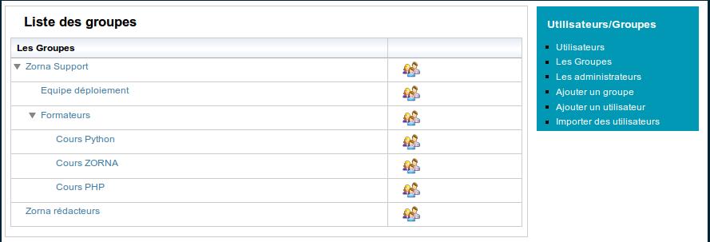

ZORNA utilise les groupes pour gérer les droits sur les objets. Un groupe est un ensemble d’utilisateurs enregistrés dans la base de données. Les groupes sont hiérarchiques c’est à dire organisés sous forme d’arborescence.
Pour octroyer des droits sur un objet géré par ZORNA ( article, faq, fichier, etc ...), on done le droit au groupe ou on le lui refuse. Tous les membres d’un groupe bénéficient des droits octroyés à ce groupe.
Pour éviter inutilement la création de groupes, ZORNA permet d’octroyer des droits par utilisateur.
Un droit peut être accordé à un groupe ou au groupe et à ses descendants.
De la même manière un droit peut être refusé à un groupe ou à ses descendants.
On peut accorder un droit à un groupe et ses descendants et le refuser pour quelques groupes dans la hiérarchie.
Cette façon de gérer les droits évite la multiplication des groupes et offre beaucoup plus de souplesse.
ZORNA permet d’organiser les groupes de manière hiérachique:
Pour créer un groupe, en tant qu’administrateur, cliquez sur le lien “Administration -> Groupes” puis “Ajouter un groupe”.
Pour voir les membres d’un groupe ou en ajouter cliquez l’icône “Les Membres”
Chaque objet a des droits spécifiques. Ainsi pour un objet on peut octroyer un droit de lecture ou de création alors que pour un autre on utilise plutôt un droit d’accès ou tout autre.
Les autorisations de droit pour les groupes sont:
Les autorisations d’un droit pour un utilisateur sont:
L’octroi des droits à un objet peut facilement devenir fastidueux surtout si le nombre de groupes est trop important.
Pour éviter cela, ZORNA vous permet de dupliquer les droits d’un objet pour les appliquer à un autre.
Pour cela il suffit de créer le nouvel objet et d’aller à l’interface de création des droits. Sur cette interface, déroulez la listbox “Charger les permissions à partir de” pour charger les permissions à partir d’un autre objet. ZORNA charge les droits octroyés à l’objet pour les appliquer au nouvel objet. Enregistrer pour sauvegarder les nouveaux droits.